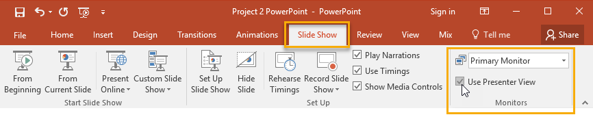
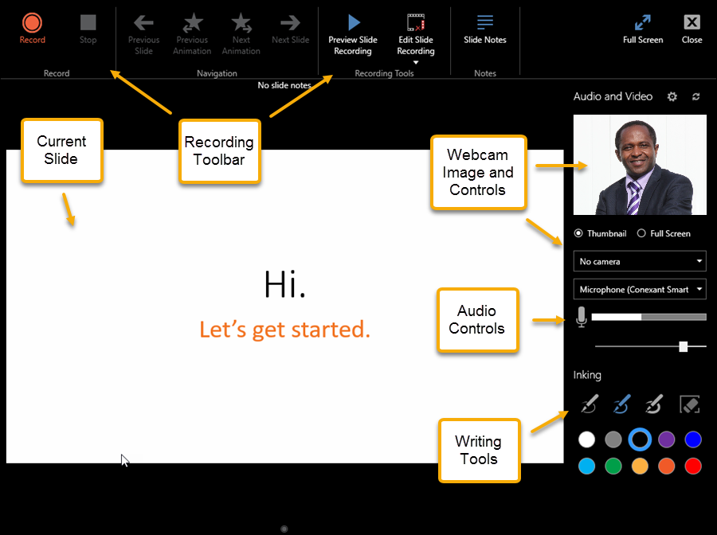
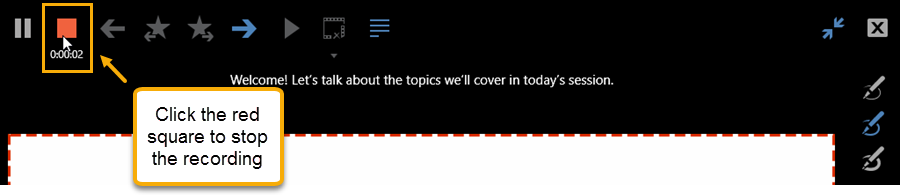

Recording a Presentation
Before recording your presentation, it may be helpful to outline or practice what you will plan to say and demonstrate. Taking a few minutes to prepare will help your Mix recording go more smoothly. Mix offers two recording options: Slide Recording and Screen Recording.
To record a presentation
Before beginning your recording, you will need to first turn on PowerPoint's Presenter View.
- Click the Slide Show tab.
- In the Monitors group, click the Monitor: drop-down menu and select Primary Monitor and check the box next to Use Presenter View.

- To begin your recording, click the Mix tab and your presentation loads in the Mix Recording Viewer. The Viewer has several main areas.

- Select the settings you wish to use during your presentation and click the Record button. The recording will begin.
- To end the recording, click the red square.
